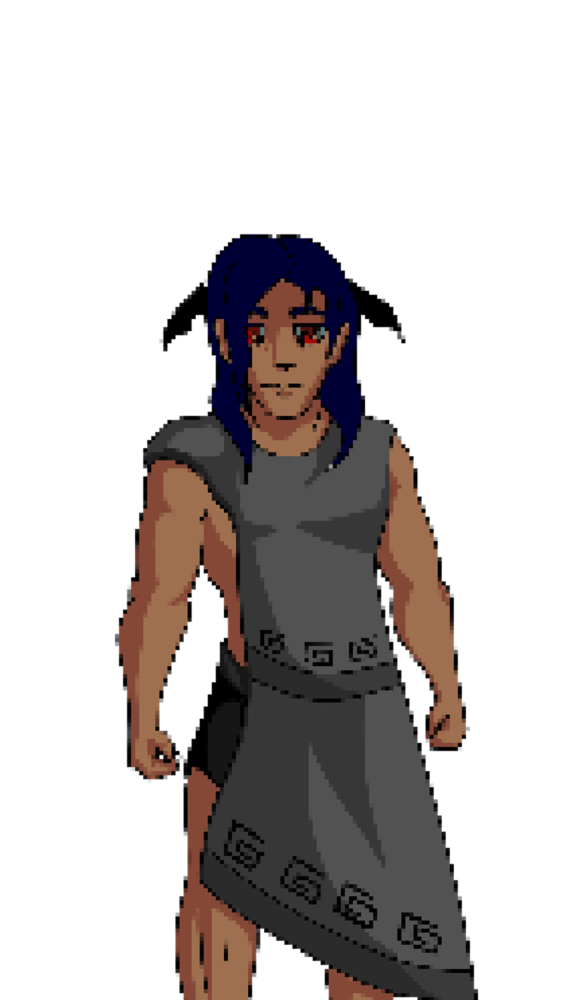

Personajes Principales

Dully Hybrid
Protagonista

Treor Marnatus
Guía

Allan of the Darkness Hybrid
Enemigo

Erebo
Guía
Tras una vida complicada, recuerdos borrosos y grandes esfuerzos por mantenerse con vida, Dully empieza a olvidar quién es, se siente vacía y confirma esto al ver que ya no hay sombra alguna que le siga sus pasos.
Sumérgete en una aventura misteriosa, cínica y profunda, para ayudar a Dully a encontrarse a sí misma antes de que sea demasiado tarde.
Protagonista
Guía
Enemigo
Guía